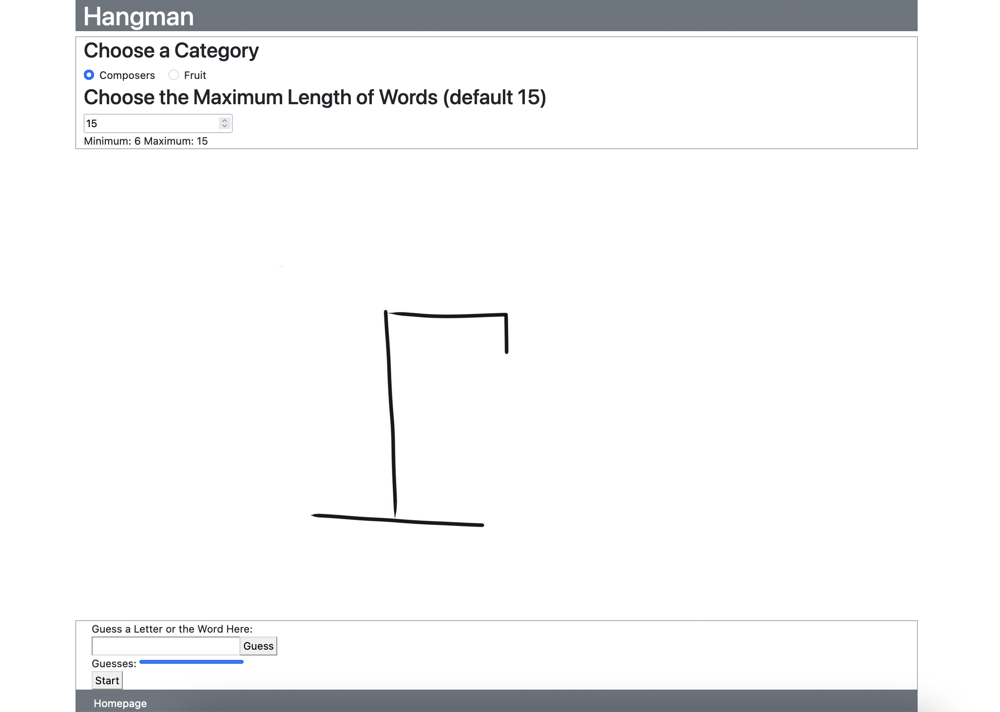

Kyle Telnes
About Me:
I am a current student at Seattle Pacific University pursuing a BS in Computer Science. I hope to gain more skill in programming and use those skills in building cool things and contributing to projects that help others.
Contact:
Phone Number: (425)-286-0113 | Email: kyle.telnes@outlook.com
Portfolio Projects
Hangman Game (School Project May 2021)
GitHub Link
Webpage Link
A web-based Hangman game using Bootstrap for the presentation, NodeExpress for the web application framework, Javascript for the game logic, deployed to Heroku. This was my first real exposure to writing code in Javascript and more practice for using Bootstrap. It includes two categories with ten different words in each, stored in JSON format. The words are randomly chosen when the user chooses a category, and the user can choose their desired maximum word length. Users have five guesses, and they can either guess with a letter, or try to guess the whole word. One bug that this web app has is that the picture sometimes will not update when the user has made a wrong guess, even though the guess meter goes down.
Library Database (School Project June 2021)
GitHub Links: Front End | Back End

Webpage Link
A web application with a front end and back end emulating a library database. Built with Node Express for the front end and back end, Bootstrap for the front end presentation, and MongoDB as the database to store book entries in. This project helped me learn how the front end relates to the back end, and how to implement an API with REST principles. It was also my first time making a navbar with Bootstrap to navigate all of the pages. The Home page links to all of the book information stored in the database, and the separate pages allowing users to search, add, edit, and delete book entries in the database, each using the corresponding GET, POST, PATCH, and DELETE HTTP requests.
Ice Cream Shop Application (School Project February 2021)
GitHub Link
A computer application made in Visual Studio C# representing the functions of an Ice Cream Shop. Users are able to use radio button to choose what flavor of ice cream that they want, and checkboxes for toppings. Each topping and flavor is attributed a constant number representing their cost, which is also displayed to the user. The application automatically tallies up the cost of the ice cream with the toppings and displays it to the user in a separate text box. Through this project, I learned how to program in C#, and use Visual Studio's tools to arrange the elements of my application into a visually appealing layout.